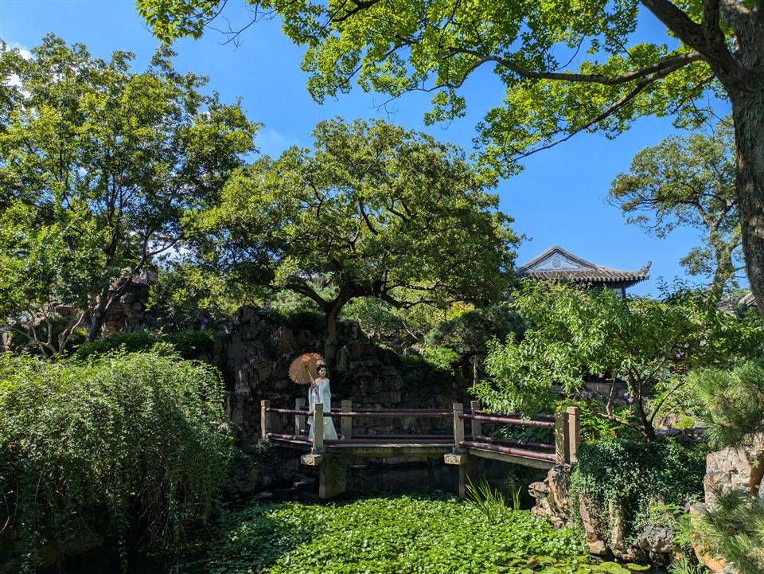

← 风景导览
入园 / 耦园
来源与说明
一窗入耦园
看地图
园景
局部

池畔
×
←
→
园中手记
＋
与君闲坐
＋
倚窗听橹
＋
临窗读书
×
再看一点
记下线索
×
MY LITTLE DISCOVERIES
园中拾趣
导出手记
×
来源与说明
图像来源
山水之间：Lamassu Design ·
CC BY-SA 3.0
·
图注与出处 ↗
水池与曲桥：Tcchang0825 ·
CC0 1.0
·
图注与出处 ↗
沈丰英《牡丹亭》· 图二：Bohan_伯韩 Shen_沈 from Beijing, China ·
CC BY-SA 2.0
·
图注与出处 ↗
Kevin A. McGill / kevinmcgill ·
平江路石拱桥
·
CC BY-SA 2.0
Kevin A. McGill / kevinmcgill ·
平江路石板桥
·
CC BY-SA 2.0
照片已缩放，页面局部裁切，沿用各图原许可。水袖插画为本站生成。